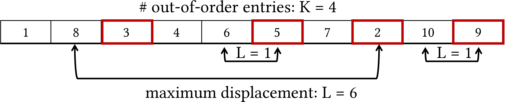
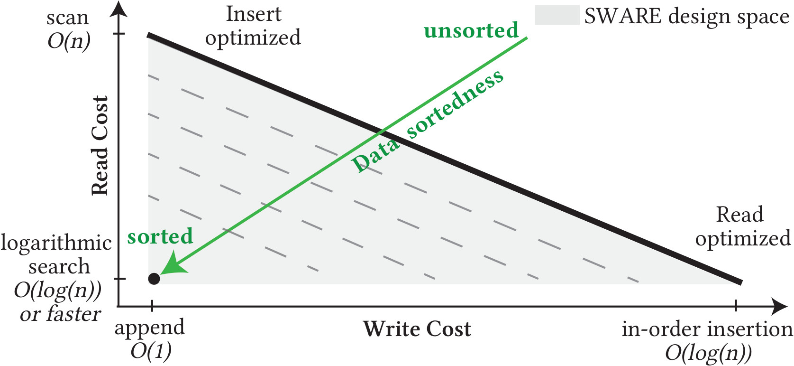

Data sortedness and how do we quantify it?
Data sortedness captures the difference between the indexed order
and the arrival order of the indexed attribute.
A simple way to quantify sortedness is to count the number of entries
that are out of order - this metric is widely known in literature as the
number of inversions.
Meanwhile, the K-L-sortedness metric quantifies sortedness with the
help
of two parameters: K that counts the number of entries in incorrect order and
L that measures the maximum displacement of any out-of-order entry.
Additionally, the K-L-sortedness metric also uses the distribution of
sortedness defined by a (α, β)-distribution to model the variability in the
displacement of out-of-order entries.

Sortedness Design Space in Indexes

Every data reorganization technique, including indexing data structures, exhibit a fundamental tradeoff between its read and write costs, along the thick black line. To achieve logarithmic search time, an index must insert entries in the correct order (i.e., in-place insertion, on the bottom right corner). On the other hand, if queries are infrequent and scanning is acceptable, entries can simply be appended (top-left). Indexes like the B+tree and B-epsilon tree navigate this read vs. write tradeoff to offer better read or write performance.
A sortedness-adaptive index achieves better read-write tradeoffs as well as improved space utilization by harnessing intrinsic data order. This allows the index to move closer to the origin of the green axis (bottom left corner) when ingesting near-sorted data.